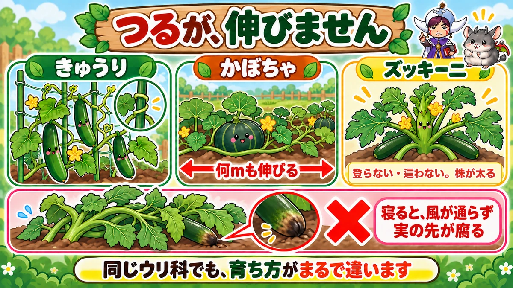
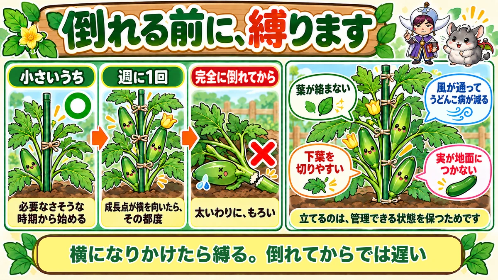
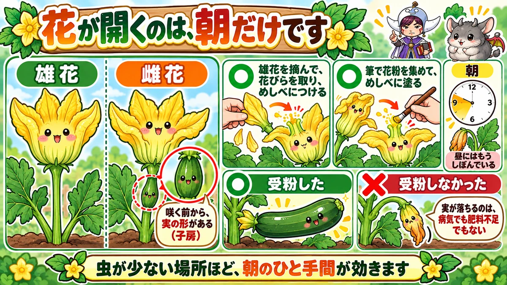

ズッキーニは立てて育てます🥒 つるが伸びない、ウリ科の変わり者
🥒「実がついたのに、大きくならずに落ちた」
🥒「株が横に広がって、通路をふさいでいる」
🥒「実の先が、いつもぐちゅっと腐る」
どうも、8150（えいこう）です🌱 家庭菜園歴8年、理科の教員免許を持っていて、有機・無農薬で野菜を育てています。
前回はオクラでした。今日はズッキーニです。
ズッキーニは見た目がきゅうりにそっくりですよね。でも育て方は、まったく違います。
先に、この記事でいちばん言いたいことを言っておきますね。
ズッキーニは、支柱に縛って立てて育てます。
つるが伸びないウリ科。これがこの野菜の、いちばん変わっているところです🥒
まず、ズッキーニの基本データ
3つだけ押さえてください
- 科：ウリ科（かぼちゃ・きゅうり・すいかの仲間。同じ場所は2〜3年あける）
- タネまき：3月（保温が要ります）〜4月
- 植え付け：4月下旬〜5月（本葉4〜5枚のころ）
※時期は中間地（関東〜関西の平野部）が目安。寒い地域は少し遅らせ、暖かい地域は早めに。
株間は80cm〜1m。そして2株以上
ここが最初の落とし穴です。
1株だけだと、実がつきにくいです。
理由はこのあと説明しますが、必ず2株以上を、80cm〜1m離して植えてください。
場所が足りないという方も、せまくてもいいので2株にしてください。1株で場所を広く使うより、確実です。
3月にまくなら、二重に保温
3月まきは、まだ寒いです。
不織布をふわっとかけて、その上からビニールのトンネル。この二重でいきます。
手間はかかりますが、5月から穫りはじめられます。急ぐ必要がなければ、4月まきでも十分です。
つるが、伸びません

ウリ科なのに、登らない
きゅうりは、ネットにつるを巻きつけて上へ登っていきます。同じウリ科のかぼちゃも、地面を這って何メートルも伸びます。
ズッキーニは、どちらもしません。
つるらしいつるが伸びないまま、株そのものが太く大きくなっていきます。
かわりに、寝ます
では放っておくとどうなるか。
横に倒れます。
茎が太くて重いので、自分の重さで倒れるんですね。そして倒れたまま、地面を這うように広がっていきます。
寝ると、こうなります
倒れた株は、こうなります。
- 葉と葉が重なって、風が通らない
- 実が地面につく → 先からぐちゅっと腐る
- 葉が絡んで、どこに実があるか分からない
- うどんこ病が出やすい
冒頭の「実の先が腐る」は、たいていこれが原因です。
支柱に縛って、立てます

小さいうちから、始める
やることは単純です。1本の支柱を株のそばに立てて、茎を縛る。
大事なのは早く始めることです。まだ小さくて、倒れる気配もないうちから縛っておきます。
「まだ必要ないかな」と思う時期がちょうどいいです。
週に1回、縛り直す
ズッキーニは上へ上へ伸びていくので、縛る位置も上へ足していきます。
私は週に1回、様子を見て縛り直しています。正直めんどうです。でも、この作業をサボると横に寝ます。
横になってからでは、遅い
ここが大事なところです。
完全に横に倒れてから起こそうとすると、茎が折れます。
ズッキーニの茎は太くて、意外ともろいんですよね。私は一度、起こそうとしてポキッといきました😅 その株はそこで終わりです。
だから「横になりかけたら縛る」。倒れる前に手を入れてください。
立てると、作業が全部ラクになります
手間の見返りは、はっきりあります。
- 葉が絡まないので、どこに実があるか見える
- 下の葉を切る作業がしやすい
- 風が通って、うどんこ病が減る
- 実が地面につかないので、腐らない
- 通路をふさがない
立てるのは、収穫のためというより「管理できる状態を保つため」だと思っています。
受粉は、朝しかできません

花が開くのは、朝だけ
ズッキーニの花は大きくて立派です。かぼちゃの花に似ています。
そしてこの花、朝しか開きません。
昼に畑へ行っても、もうしぼんでいます。受粉の作業は、朝にしかできないということです。
雌花には、最初から実がついています
ここが面白いところです。
ズッキーニには雄花と雌花があります。雌花は、咲く前から花の下にズッキーニの形の膨らみがあります。
小さいズッキーニに花が乗っているような姿です。初めて見ると「もう実ができてる！」と驚きます。
やり方は、2つ
- 雄花を1本摘んで、花びらを取り、めしべに直接こすりつける
- 筆で雄花の花粉を集めて、めしべに塗る
どちらでもかまいません。私は筆を使っています。1本持って畑に行くだけなので、続けやすいです。
虫が少ないなら、必須です
「自然に受粉するのでは？」と思いますよね。
蜂などの虫が来ていれば、そのとおりです。
でもベランダや、まわりに畑が少ない場所では、虫が足りません。そういう場所ほど、人工授粉の効果がはっきり出ます。
1株だけだと実がつきにくいのも、同じ理由です。花粉を出す相手がいないと始まりません。
収穫と、あとのお世話
20cmで穫ります
収穫のサイズは、長さ20cm、太さ3〜4cmです。
思ったより早めですよね。大きくすると味が落ちますし、株も疲れます。オクラと同じ話です。
下の葉を切る
収穫が進んだら、穫り終わった実より下の葉を切っていきます。
白っぽくなった葉や、黄色くなった葉が目印です。もう光合成の仕事をしていません。
切ると風が通って、新しい花が咲きやすくなります。収穫期間が伸びます。
立ててあると、この作業が本当にラクです。寝ている株だと、葉をかき分けるところから始まります。
うどんこ病には、重曹
葉が白く粉をふいたようになったら、うどんこ病です。ウリ科の宿命ですね。
私は重曹を1g、水1リットルに溶かしたものを使っています。
農薬ではありません。見つけたら早めに、が基本です。広がってからでは追いつきません。
学ぶ：あの膨らみは、受粉を待っています🔬
花の下に、もう実の形がある
さきほどの「雌花の下の膨らみ」の話に戻ります。
あれは子房（しぼう）といって、めしべの根元の部屋です。中に、将来タネになるものが並んでいます。
ウリ科は、この子房が花の下にあります。だから咲く前から、実の形が見えるわけです。
受粉しないと、そこで止まる
そして、ここが大事です。
受粉しないと、その膨らみは大きくなりません。
黄色くなって、しなびて、ぽろっと落ちます。「実がついたのに落ちた」の正体がこれです。
病気でも肥料不足でもありません。花粉が届かなかっただけです。
とうもろこしと、同じ話
前に、とうもろこしのひげの話をしました。ひげ1本が粒1個につながっている、というあれです。
構造は違っても、起きていることは同じです。受粉した分だけ実になる。
実物で確かめられます
これは畑で見比べられます。
受粉した実と、受粉しなかった実を並べて見てください。
かたやぐんぐん太り、かたや付け根から黄色くなっていく。同じ日に咲いた花なのに、はっきり分かれます。理屈より、この1回のほうが残ります☺️
まとめ
ここまで読んでくださって、ありがとうございます！
- ズッキーニはウリ科。でもつるが伸びない
- 株間80cm〜1m。必ず2株以上
- 3月まきは不織布＋ビニールの二重で保温
- 放っておくと横に寝て、葉が絡み、実が腐る
- 小さいうちから支柱に縛って立てる
- 週に1回、縛り直す
- 完全に倒れてから起こすと茎が折れる
- 立てると下葉切り・収穫・風通しが全部ラクになる
- 花は朝しか開かない。受粉作業は朝に
- 雌花は咲く前から実の形をしている
- 雄花を直接つけるか、筆で花粉を塗る
- 虫が少ない場所ほど人工授粉が効く
- 収穫は長さ20cm、太さ3〜4cm
- 穫り終わった実より下の葉を切る
- うどんこ病には重曹1gを水1リットルに
全部やろうとしなくて大丈夫です。まずは支柱を1本、株のそばに立ててみてください。それだけで、この野菜は扱いやすくなります🥒
次回は、ゴーヤの話です。なかなか芽が出ない種を、爪切りで発芽させる話をします🌿
ズッキーニのタネ
かぼちゃの仲間ですが、つるが伸びずに立ち上がります。場所を取らないので少ない畑向きです。
![[商品価格に関しましては、リンクが作成された時点と現時点で情報が変更されている場合がございます。]](https://hbb.afl.rakuten.co.jp/hgb/552615f0.9cc2855e.552615f1.776f7de9/?me_id=1251188&item_id=10003222&pc=https%3A%2F%2Fthumbnail.image.rakuten.co.jp%2F%400_mall%2Fyonezawa%2Fcabinet%2Ftane01%2F1017makuwa%2Fakizucch.jpg%3F_ex%3D240x240&s=240x240&t=picttext "[商品価格に関しましては、リンクが作成された時点と現時点で情報が変更されている場合がございます。]")

支柱150cm
放っておくと自分の重さで倒れます。小さいうちから立てて縛るのがコツです。
![[商品価格に関しましては、リンクが作成された時点と現時点で情報が変更されている場合がございます。]](https://hbb.afl.rakuten.co.jp/hgb/56d221a0.da732c49.56d221a1.b57a6709/?me_id=1230952&item_id=10017113&pc=https%3A%2F%2Fthumbnail.image.rakuten.co.jp%2F%400_mall%2Fnou-nou%2Fcabinet%2F5010356000109-01.jpg%3F_ex%3D240x240&s=240x240&t=picttext "[商品価格に関しましては、リンクが作成された時点と現時点で情報が変更されている場合がございます。]")
誘引クリップ
茎が太いので、ひもだと食い込みます。クリップだと締めすぎません。

あわせて読みたい